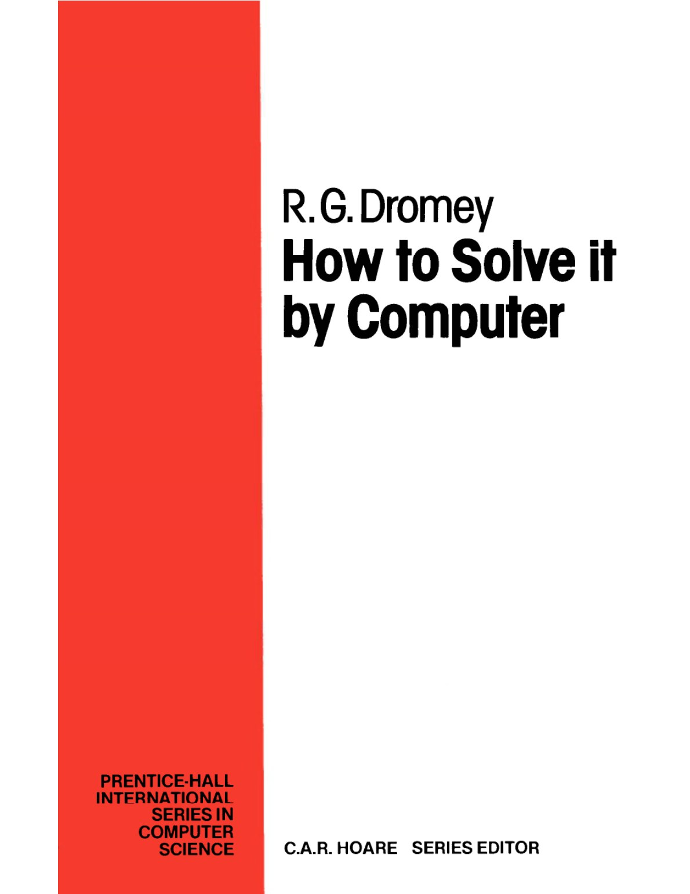
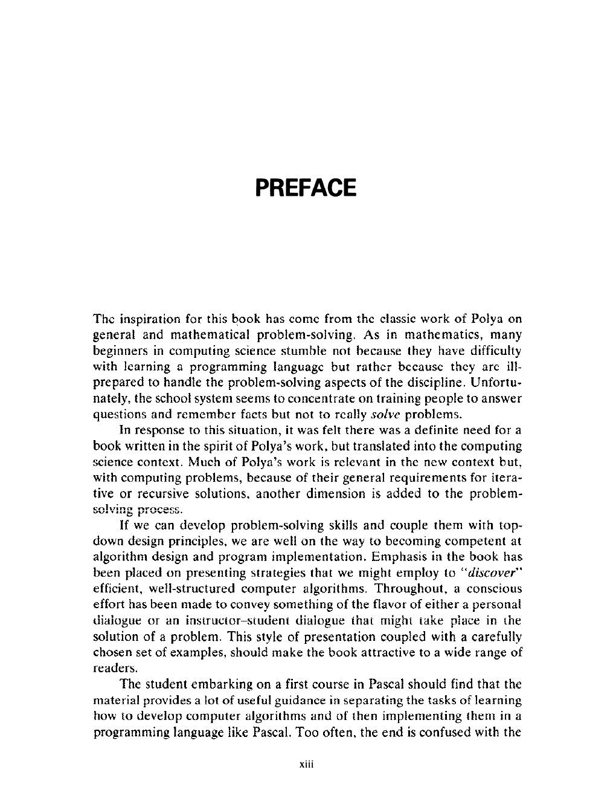

Chapter-wise worked examples and supplementary practice prompts based on R. G. Dromey's classic problem-solving text. Questions only—no answers or solution steps.
8chapters
50worked examples
236supplementary questions

The original Prentice-Hall edition

Inside the book: its problem-solving purpose
About the book
How to Solve It by Computer by R. G. Dromey
First published by Prentice-Hall International in 1982, this 442-page computer-science text teaches readers how to move from understanding a problem to discovering, expressing, checking and refining an algorithm. Its examples span fundamental algorithms, factoring methods, arrays, sorting and searching, text processing, dynamic data structures and recursion.
About R. G. Dromey
R. G. Dromey, born in 1946, is a computer-science author and academic. When this book was published, he was associated with the Department of Computing Science at the University of Wollongong in Australia. His teaching approach places problem-solving and algorithm design before programming-language syntax, helping learners understand the reasoning that produces a program rather than merely memorising code.
Why this book remains important
Programming languages change, but the habits needed to solve problems well remain remarkably stable. Dromey's book is valuable because it makes the design process visible: choosing representations, identifying invariants, breaking a task into smaller parts, checking boundary cases and comparing alternative algorithms.
Builds algorithmic thinking: it begins with the problem and develops the solution step by step.
Connects ideas to implementation: worked examples show how reasoning becomes a precise algorithm.
Covers enduring foundations: searching, sorting, arrays, recursion, trees and linked structures remain central to DSA.
Encourages independent practice: the exercises require learners to adapt techniques instead of copying answers.
View the book on Amazon
Affiliate disclosure: As an Amazon Associate, Programmer's Picnic may earn from qualifying purchases.
Showing all 246 questions and 50 worked examples.
Chapter 1
Introduction to Computer Problem Solving
Core study prompts
Chapter questions and examples
1.1
How can a large computer problem be divided into manageable subproblems using top-down design?
1.2
How can a specific small example help reveal the general mechanism of an algorithm?
1.3
How should the initial condition, invariant relation, and termination condition of a loop be established?
1.4
How can an algorithm determine whether the elements of an array are in strictly ascending order?
1.5
How should a program be modularized into procedures without making it unnecessarily fragmented?
1.6
Which boundary, limiting, and unusual data sets should be used to test a binary-search program?
1.7
How can assignment, conditional, and iterative program segments be verified using assertions and invariants?
1.8
How should the time and space efficiency of an algorithm be measured?
1.9
How do linear search and binary search differ as the input size grows?
1.10
How can the best-case, worst-case, and average behavior of an algorithm be analysed?
Chapter 2
Fundamental Algorithms
Algorithm 2.1
Exchanging the Values of Two Variables
5 questions
Worked example
Given two variables a and b, exchange the values assigned to them.
Supplementary questions
2.1.1
Given two glasses marked A and B. Glass A is full of raspberry drink and glass B is full of lemonade. Suggest a way of exchanging the contents of glasses A and RB.
2.1.2
Design an algorithm for the cyclic exchange a to b, b to c, and c to a.
2.1.3
Design an algorithm for the cyclic exchange d to c, c to b, b to a, and a to d.
2.1.4
Given two variables of integer type a and b, exchange their values without using a third temporary variable.
2.1.5
What happens when the arguments given to the procedure exchange are i and afi]?
Algorithm 2.2
Counting
3 questions
Worked example
Given n examination marks from 0 to 100, count how many students passed, where a pass is a mark of 50 or above.
Supplementary questions
2.2.1
Modify the algorithm above so that marks are read until an end-offile is encountered. For this set of marks determine the total number of marks, the number of passes, and the percentage pass rate.
2.2.2
Design an algorithm that reads a list of numbers and makes a count of the number of negatives and the number of non-negative members in the set.
2.2.3
Youare given the problem described above. However, assume that your program is to start out with the variable count initialized to the total number of students n. On termination, the value of count should again represent the number of students that passed the examination. If there were more passes than fails, why would this implementation be better than the original one?
Algorithm 2.3
Summation of a Set of Numbers
0 questions
Worked example
Given n numbers, compute and return their sum, where n is nonnegative.
Algorithm 2.4
Factorial Computation
6 questions
Worked example
Given a nonnegative integer n, compute n factorial.
Supplementary questions
2.4.1
For a given n, design an algorithm to compute 1/r!.
2.4.2
Fora given x and a given n, design an algorithm to compute x"/n!.
2.4.3
Design an algorithm to determine whether or not a number n is a factorial number.
2.4.4
Design an algorithm which, given some integer 7, finds the largest factorial number present as a factor in n.
2.4.5
Design an algorithm to simulate multiplication by addition. Your program should accept as input two integers (they may be zero, positive, or negative).
2.4.6
The binomial theorem of basic algebra indicates that the coefficient "C, of the r power of x in the expansion of (x + 1)" is given by "Ge tl " ri(n—r)t Design an algorithm that evaluates all coefficients of x for a given value of n.
Algorithm 2.5
Sine Function Computation
3 questions
Worked example
Evaluate sin x from its infinite-series expansion to an acceptable error of 10 to the power minus 6.
Supplementary questions
2.5.1
Design an algorithm to find the sum of the first n terms of the series fe OlLtU+2+3!4 - +a! (n=0)
Design an algorithm to evaluate the function cos (x) as defined by the infinite series expansion 2 x4 x6 cos (x)=1-F +h =e aaa The acceptabie error for the computation is 10+.
Algorithm 2.6
Generation of the Fibonacci Sequence
6 questions
Worked example
Generate and print the first n terms of the Fibonacci sequence.
Supplementary questions
2.6.1
Implement the Fibonacci algorithm as a function (hal accepts as input two consecutive Fibonacci numbers and returns as output the next Fibonacci number.
2.6.2
The first few numbers of ihe Lucas sequence which is a variation on the Fibonacci sequence are: 13 4 7 11 18 29... Design an algorithm to generate the Lucas sequence,
2.6.3
Given a=0, b=1, and c=1 are the first three numbers of some sequence. All other numbers in the sequence are generated from the sum of their three most recent predecessors. Design an algorithm to generate this sequence.
2.6.4
Given that two numbers d and ¢ are suspected of being consecutive members of the Fibonacci sequence design an algorithm that will refute or confirm this conjecture.
2.6.5
The ascending sequence of all reduced fractions between 0 and 1 which have denominators <r is called the Farey series of order a. The Farey series of order 5 is: O11121323421 1543525 345 8 Denoting this serics by % m1 ., Yo Vi Ye it can be shown that X=0 yo=l x=) ya and in general for k=1 (y.tn Xia? =| 5" Xin Le k+L +n) Vier = [| Vent Ye keh where [q| is the greatest integer less than or equal to g. Design an algorithm te generate the Farey series for a given n. (See Design an algorithny to getie rate the Paret series foragivenu: (See D. E. Knuth, The Art of Computer Programming, Vol. 1, Fundamental Algorithms, Addison-Wesley, Reading, Mass., p. 157. 1969.)
2.6.6
Generate the sequence where each member is the sum of adjacent factorials, i.e. A= +0! fe=2!41! fs=3!42! Note that by definition 0!= 1.
Algorithm 2.7
Reversing the Digits of an Integer
3 questions
Worked example
Accept a positive integer and reverse the order of its digits.
Supplementary questions
2.7.1
Design an algorithm that counts the number of digits in an integer.
2.7.2
Design an algorithm to sum the digits in an integer.
2.7.3
Design an algorithm that reads n single digits and converts them into one decimal integer; for example, convert {2, 7, 4, 9, 3} to 27493.
Algorithm 2.8
Base Conversion
5 questions
Worked example
Convert a decimal integer to its corresponding octal representation.
Supplementary questions
2.8.1
Modify the algorithm to incorporate the generalization suggested in note (7).
2.8.2
Design an algorithm that converts binary numbers to octal.
2.8.3
Design an algorithm that converts binary numbers to decimal.
2.8.4
Design an algorithm that accepts as input a decimal number and converts it to the binary-coded decimal (bed) representation. In the bed scheme each digit is represented by a 4-bit binary code.
2.8.5
Design an algorithm that accepts as input a decimal fraction and converts it to the corresponding binery fraction of a fixed accuracy converts it to the corresponding binary fraction of a fixed accuracy (e.g. 0.625,) = 0.101, = 1x2 '+0x«2 74+1x2 3).
Algorithm 2.9
Character to Number Conversion
3 questions
Worked example
Convert the character representation of an integer to conventional decimal form.
Supplementary questions
2.9.1
Design an algorithm that will handle conversions to decimal where the inpui characier suing may contain a decimal point.
2.9.2
Design an algorithm to convert a decimal representation for a number to the corresponding character string representation.
2.9.3
Given that all ascii codes are less than 128, design an algorithm that reads a given set of data and decides whether or not it may contain decimal data.
Chapter 3
Factoring Methods
Algorithm 3.1
Finding the Square Root of a Number
4 questions
Worked example
Given a number m, compute its square root.
Supplementary questions
3.1.1
Implement the square-root-finding algorithm that was originally proposed.
3.1.2
Design an algorithm that inputs n positive numbers and computes their geometric mean.
3.1.3
Design an algorithm that finds the integer whose square is closest to but greater than the integer number input as data.
3.1.4
Design and implement an algorithm to iteratively compute the reciprocal of a number.
Algorithm 3.2
The Smallest Divisor of an Integer
6 questions
Worked example
Given an integer n, find its smallest exact divisor other than 1.
Supplementary questions
3.2.1
Modify the algorithm so that the square root of n does not need to be explicitly computed.
3.2.2
Design an algorithm to produce a list of ali exact divisors of a given positive integer 7.
3.2.3
Design and implement an algorithm that finds the smallest positive integer that has n or more divisors.
3.2.4
For the integers in the range 1 to 100 find the number that has the most divisors.
3.2.5
It is possible to improve the efficiency of our smallest divisor algorithm by generating a sequence of ds that excludes multiples of 3 as well as multiples of 2. Implement an algorithm that includes this refinement.
3.2.6
An algorithm due to Fermat can be used to find the largest factor f (less than or equal to V/n) of an odd integer. Fermat established that the following relations hald form the following relations hold for n. n- fxg with f<g n=x?~y? with Osy<xen where x=[(f+g)/2]. y=(e-f1/2} The algorithm can be implemented by introducing two auxiliary variables x' and y' such that x'=2x+1 y'=2yt1 The odd values that these two variables can assume are: x’: An +1, Bn]+3, Avaj+s, ... ViL35.7.. Noting that successive squares can be generated by summing the odd sequence, the error ¢ (initially set to [| \/n}?—n]) when positive is reduced by subtracting successive y’ values until it is made zero or negative, and, when negative it is reduced by adding successive x’ values. This process terminates when e = 0, At this point the factor f can be found from f= |G! -y')/2} Implement Fermat's algorithm.
Algorithm 3.3
The Greatest Common Divisor of Two Integers
9 questions
Worked example
Given two positive nonzero integers, find their greatest common divisor.
Supplementary questions
3.3.1
Implement a ged algorithm that uses a while-loop rather than a repeat-loop.
3.3.2
Design a gcd algorithm that does not use either division or mod functions.
3.3.3
Design an algorithm that will find the ged of n positive non-zero integers.
3.3.4
Ifthe twointegers whose ged is sought may contain multiples of two, then a better way to proceed is by first reducing each of the integers by their common multiples of two, taking into account their contribution to the ged. When one integer contains multiples of two it is best to remove these contributions before proceeding with the standard gcd mechanism. Try to incorporate these ideas into a more efficient ged algorithm.
3.3.5
Design an algorithm io find aii common prime divisors of iwo numbers, (Hint:
3.3.6
It is well known that adjacent Fibonacci numbers do not share a common divisor greater than 1 (they are relatively prime). Design an algorithm that tests this observation for the first m integers.
3.3.7
Design an algorithm to compute the smallest common multiple (scm) of two non-zero positive integers 7 and p. The scm is defined as the smallest integer m such that # and p divide exactly into m.
3.3.8
Design an algorithm to compute the smallest common divisor other than one of two positive non-zero integers.
3.3.9
Given the two fractions a/b and c/d, design an algorithm that computes their sum in terms of the smallest common denominator.
Algorithm 3.4
Generating Prime Numbers
4 questions
Worked example
Generate all prime numbers among the first n positive integers.
Supplementary questions
3.4.1
Atthe cost of some additional storage the prime-testing loop can be simplified and speeded up. This involves moving the step for updating the mudtiple array outside this loop. Try to modify the algorithm to incorporate this refinement.
3.4.2
It is possible to implement a sieving algorithm which crosses out each composite (non-prime) number exactly once rather than a number of times. The algorithm is based on the idea that any non-prime x can be written as x = pg where k> | and q is a prime =p. Try to implement this algorithm (ref. D. Gries and J, Misra, “A linear sieve algorithm for finding prime numbers”, Comm. ACM, 21, 999-1003 (1978)).
3.4.3
Another interesting sequence of numbers is produced by starting out with the lst of all integers 1, 2, 3, .... 1. From this list every second number is removed to produce a new list. From the new list every third number is removed to give yet another list. Every fourth number is removed from this list and so the process continues. The numbers that remain after this process are called the lucky numbers. The first seven lucky numbers are 1,3, 7,9, 13,15, 21, .... Design an algorithm to list the lucky numbers in the first # integers.
3.4.4
The largest known primes are calied the Mersenne primes. They are of the form 2”~1 where p is prime. A test called Lucas’ test can be used to check whether a number of this form is prime. The test can be stated as follows, If p>2 then 2’~1 is prime only if 1-2 = Owhere the sequence / can be generated using = 4, 1.1. = (2-2) mod (2’—-1). Design an algorithm to generate the Mersenne primes in the first 4 integers.
Algorithm 3.5
Computing the Prime Factors of an Integer
4 questions
Worked example
Given an integer n, compute all its prime factors.
Supplementary questions
3.5.1
Implement a version of the prime factorization algorithm that incorporates a sieve of Eratosthenes procedure.
3.5.2
implement a prime factorization algorithm that eliminates only niultiples of 2, 3 and 5 as divisors and compare il with 3.5.1 in terms of the number of divisions made.
3.5.3
Amicable numbers are pairs of numbers each of whose divisors add ty the other nuniber, (Note: 1 is included as a divisor but the numbers are not included as their own divisors.) Design and implement an algorithm that tests whether a given pair of numbers are amicable numbers.
3.5.4
A perfect number is one whose divisors add up to the number. Design and implement an algorithm that prints all perfect numbers between 1 and 500,
Algorithm 3.6
Generation of Pseudorandom Numbers
4 questions
Worked example
Use the linear congruential method to generate uniformly distributed pseudorandom numbers.
Supplementary questions
3.6.1
Confirm that the algorithm repeats after generating m random numbers. Compute the mean vaiue and variance for the set of mt pseudo-random numbers.
3.6.2
Check the uniformity of the distribution produced by the linear congruential method for m = 4096 by accumulating random numbers in blocks of 64 in the range 0-+4095 (e.g. the first block is 0-+63). Make a plot of the resulting histogram.
3.6.3
Uniformly distributed random numbers {r} can be used to generate arandom set that are exponentially distributed {x} using the formula Xx, aul log, (i~7) i= ~y loge 7 where A is a parameter of the exponential distribution. Implemeat the algorithm,
3.6.4
The polar method can be used to generate normally distributed random numbers in the range 0 to Lt. Itinvolves first generating two uniform random numbers r, and r,. Then if the expression for d below is =1 two normally distributed random numbers can be computed asm, and #,, Theat is. computed de ay snd ety. That is; d= (2r,~1)?+(2r,-1)? 2 lo; i n =0r-1(2 a) - 1 = (Or, -1)(—2 toed) Use these expressions te generate normally distributed random numbers.
Algorithm 3.7
Raising a Number to a Large Power
3 questions
Worked example
Given an integer x and a large positive integer n, compute x raised to the power n.
Supplementary questions
3.7.1
Design an algorithm for power evaluation that is built upon a base 3 strategy rather than the current base 2 method. Compare the resulls for this new method with the current algorithm.
3.7.2
Design a complete precision power evaluation algorithm for values of x" that may exceed the compuler’s integer representation limit,
3.7.3
It is sometimes important to establish that a number is not a prime. To do this we can use a result that follows from the work of Fermat. ii is possible to show that for ali prime aunibeis cacept 2, the following condition holds: 2°! mod p=i This test can be performed in the order of log,(p) steps. Design an algorithm to test a number for non-primality. For simplicity, choose a prime such that 2! does not exceed your computer's integer word size representation limit.
Algorithm 3.8
Computing the nth Fibonacci Number
4 questions
Worked example
Given n, compute the nth member of the Fibonacci sequence.
Supplementary questions
3.8.1
Develop a recursive implementation that incorporates the ideas above for calculating the n' Fibonacci number. Compare the performance of the recursive method with the iterative solution,
3.8.2
What sequence of pairs of Fibonacci numbers would be needed to compute the 23" Fibonacci number using the present algorithm?
3.8.3
It is possible to multiply two numbers x and y by repeatedly halving y (ie. integer division) when it is even and reducing it by 1 when it is odd. When y is odd the current value of x is accumulated. When pis even, x is doubied. Impiemeni this muitiplication algorithm. (Nore: Doubling and halving operations correspond to “shift” operations which are very efficient on most computers.)
3.8.4
It is possible to compute n! in O(log, 1) steps. Try to develop such an algorithm for computing #! (Ref. A. Shamir, “Factoring numbers in O(log «) arithmetic steps”, Inf. Proc, Letts., 8, 28-31 (1979)).
Chapter 4
Array Techniques
Algorithm 4.1
Array Order Reversal
4 questions
Worked example
Rearrange an array so that its elements appear in reverse order.
Supplementary questions
4.1.1
What happens if the exchange process continues for rn steps rather than |n/2| steps?
4.1.2
Implement the array reversal algorithm suggested in note 6.
4.1.3
Design an algorithm that places the A clement of an ariay in position 1, the (k+1)" element in position 2, etc. The original 1% element is placed at (n—k+1) and so on.
4.1.4
Desigu au algoriilim thai rearranges the clements of au array so that all those originally stored at odd suffixes are placed before those at even suffixes. For example, the set i243 [4 45 [647 48h would be transformed to ap = 1 3 {547/244 16 [8
Algorithm 4.2
Array Counting or Histogramming
3 questions
Worked example
Given n examination marks from 0 to 100, count how many students obtained each possible mark.
Supplementary questions
4.2.1
Modify the algorithm above so that a histogram is obtained only for each ten percentile range (e.g. 0-- 10%, 11-20%, ...) rather than for each individual mark.
4.2.2
Itis required to generate a histogram distribution for a set of daily average temperatures recorded in Antarctica. The temperatures are integer values in the range —40°C to +5°C. Design an algorithm to input n such temperatures and produce the appropriate distribution.
4.2.3
Modify the marks algorithm so that the mean and the median mark for the set are obtained. The median mark is that mark for which essentially half the candidates received thal mark or some smaller mark.
Algorithm 4.3
Finding the Maximum Number in a Set
9 questions
Worked example
Find the maximum value in a set of n numbers.
Supplementary questions
4.3.1
Design an algorithm to find the minimum in an array.
4.3.2
Design an algorithm to find the number of times the maximum occurs in an array of 2 elements. Only one pass through the array should he made.
4.3.3
Design aa algorithm to find the maximum in a set and the position (a) where it first occurs; (b) where it last occurs,
4.3.4
Design an algorithm that finds the maximum absolute difference between adjacent pairs in an array of n elements.
4.3.5
Design an algorithm that finds the second-largest value in an array of n elements.
4.3.6
Find the position of a number x, if it occurs, in an array of n elements.
4.3.7
Design an algorithm that finds the maximum by comparing each number with every other number and stops when it finds a number greater than or equal to all others. What happens when this method is implemented as efficiently as possible?
4.3.8
Design an algorithm to find the minimum, the maximum, and how many times they both occur in an array of n elements.
4.3.9
Find the minimum and maximum in an array of n elements using approximately 3n/2 comparisons by processing elements in pairs, comparing each pair's larger element with the current maximum and its smaller element with the current minimum.
Algorithm 4.4
Removal of Duplicates from an Ordered Array
5 questions
Worked example
Remove all duplicates from an ordered array and contract the array accordingly.
Supplementary questions
4.4.1
Remove from an ordered array all numbers that occur more than once,
4.4.2
Delete from an ordered array all clements that occur more than k times.
4.4.3
Give an example of an array configuration that leads to (n - 2) squared data-movement operations.
4.4.4
Design an algorithm for storing an ordered array that contains many duplicates. Assume that the array has no negative elements.
4.4.5
Given a large ordered array in which repeated values commonly occur many times, design an adaptive duplicate-deletion algorithm that is more efficient than the preceding algorithm for this kind of data.
Algorithm 4.5
Partitioning an Array
3 questions
Worked example
Partition a randomly ordered array into one subset containing elements less than x and another containing elements greater than x.
Supplementary questions
4.5.1
Implement the alternative partitioning method that advances i while a[i] is less than x, decreases j while a[j] is greater than x, and otherwise exchanges a[i] with a[j] before continuing.
4.5.2
Design an algorithm that extracts from a randomly ordered array all values lying within a specified range.
4.5.3
The problem of the Dutch national flag involves starting out with a row of n buckets, ie. buckei{1..n], each bucket containing a single pebble that is cither rod, white or bluc. The task is to arrange the pebbles so that all reds occur before all whites which in turn occur before all blue pebbles. Design and implement an algorithm to solve the Dutch national flag problem. {See E. W. Dijkstra, A Discipline of Programming, Prentice-Hall, Englewood Cliffs, N.J.. 1976. p.411.)
Algorithm 4.6
Finding the kth Smallest Element
4 questions
Worked example
Given a randomly ordered array of n elements, determine its kth smallest element.
Supplementary questions
4.6.1
Implement and compare the two algorithms given for varying k values relative to n. For the comparison measure the number of exchanges in each case. Use a random number generator to produce suitable data sets.
4.6.2
For very small values of k relative ton (i.¢. for k< 10 and large n) itis possible to design a more efficient algorithm using the following idea. At cack stage in the algorithm the largest element in the first k values is exchanged with progressively smaller values in the set a{k+1], a[k+2], ..., a[n]. Design and implement this algorithm and compare it with the algorithm above for very small & relative to m.
4.6.3
Ifthe first k elements in the array are maintained as a heap or a tree data structure. we get a more efficient version of
4.6.4
The algorithm we have described can be improved by using a sampling method. The idea is to use say a 1% sample and find the k* smallest as the estimate of x (ref. R. W. Floyd und R. L. Rivest, “Expected time bounds for selection.” Comm. ACM, 18, 165-172, 1975). Implement and test this approach.
Algorithm 4.7
Longest Monotone Subsequence
5 questions
Worked example
Given n distinct numbers, find the length of their longest monotonically increasing subsequence.
Supplementary questions
4.7.1
Implement the first design that was proposed for finding the longest monotone increasing subsequence.
4.7.2
Compare the performance of the algorithm in 4.7.1 with the algorithm above for (a) random data, (b) data with a long monotone increasing subsequence (say 0.511).
4.7.3
Design and implement an algorithm that prints out the longest inonotone increasing subsequence for a given set of data,
4.7.4
Design and implement an algorithm that determines the length of the longest monotone (it may be either increasing or decreasing) subsequence.
4.7.5
Design and implement an algorithm that uses the suggestion in note 7
Chapter 5
Merging Sorting and Searching
Algorithm 5.1
The Two Way Merge
5 questions
Worked example
Merge two ascending integer arrays into one ordered array.
Supplementary questions
5.1.1
Implement the first merging algorithm that was developed.
5.1.2
Design and implement a merging algorithm that reads the data sets from two files of unknown length. Use end-of. file tests to detect the ends of the data sets.
5.1.3
Design and implement a merging algorithm that uses only two arrays. It can be assumed that the sizes of the two data sets are known in advance. An interesting way to do this is to place the array with the biggest element so that it fills up the output (merged) array. The following diagram illustrates the idea (the & array has the largest clement). 1 m @ array nnn (2 b array Output array and temporary storage for b This simplifies the merge because when the merging of a is completed the remaining elements of A will he in place
5.1.4
Design an algorithm for merging three arrays.
5.1.5
In the special case where it is necessary to “merge” two tiles of m and n elements (where m= 1 and n is large) the problem is best solved by binary search. It is also possibic to show that conditions for merging are “best” when m = n. Noting these facts it is possible to implement a merging algorithm that couples a binary search with a normal merging operation in a way that allows the best features of both to be retained. This can be done by imagining that the larger of the two data sets is divided up into blocks equal to the size of the smaller data set. For example, [J ats. <_2> ee ee ee Se 8 re where the blocksize is 2' and ¢= [log, (n/m)|. The merge then starts by moving backwards in steps of size 2' through b[1. .2] until the last element in m is established to be within a given block of size 2'. The last element of a{1..m] can then be merged with the block in ¢ comparisons using a binary search. The process then repeats for a{m~ 1]. Implement this algorithm. (See F, W. Hwang and S. Lin, “A simple algorithm for merging two disjoint linearly ordered data sets”, SEAM J. Computing, 1, 31-39 (1972).)
Algorithm 5.2
Sorting by Selection
6 questions
Worked example
Sort a randomly ordered set of n numbers into nondescending order by selection.
Supplementary questions
5.2.1
Sort an array into descending order.
5.2.2
Implement a selection sort that removes duplicates during the sorting process.
5.2.3
Implement an algorithm that incorporates the idea in note 5, and work out the relative number of comparisons it makes.
5.2.4
Count the number of minimum updates the selection sort requires for sorted, reverse order, and random data.
5.2.5
The selection sort can be modified so that it will terminate as soon as it is established that the data set is sorted. This is done by counting the number of times the minimum is updated in each selection pass. It also involves some other changes. Implement this algorithm.
5.2.6
Implement a function that examines an array and returns the Boolean value sorted which is true if the array is in nondescending order and false otherwise.
Algorithm 5.3
Sorting by Exchange
5 questions
Worked example
Sort a randomly ordered set of n numbers into nondescending order by exchange.
Supplementary questions
5.3.1
Use a count of the number of comparisons and exchanges made lo compare the selection sort and bubblesort for random data.
5.3.2
Implement a version of the bubblesort that builds up the sorted airay from sinaliest io largest rather than as in ihe prescui algorithm.
5.3.3
Design and implement an algorithm that incorporates the suggestion in note 4 above.
5.3.4
Design and implement a modified bubblesort that incorporates exchanges in the reverse direction of fixed length.
5.3.5
Try to design a less efficient bubblesort than the present algorithm.
Algorithm 5.4
Sorting by Insertion
6 questions
Worked example
Sort a randomly ordered set of n numbers into nondescending order by insertion.
Supplementary questions
5.4.1
Compare the selection sort and insertion sort for random data, Use the number of moves and the number of comparisons to make the comparative study.
5.4.2
A small saving can be made with the insertion sort by using a method that does other than selection of the next element for insertion. Try to incorporate this suggestion. $4.3. Asaving on both comparisons and moves can be made by inserting more than one element into the ordered part with successive passes. Design such an algorithm that functions by inserting two elements with each pass through the outermost loop.
5.4.3
Save comparisons and moves by inserting two elements into the ordered part during each pass of the outer loop. Design such an algorithm.
5.4.4
The algorithm we have produced takes nu advantage of the fact the elements in positions a[1..i] are ordered. Use a binary search to speed up the location of the insertion position (see
5.4.5
Modify the insertion sort so that itis more balanced, To do this allow insertions at both ends of the array. You may also wish to include an exchange mechanism to speed up the algorithm even further.
5.4.6
The position of the last insertion can be ‘‘remembered” and employed when inserting the next element. Implement a version of the insertion sort that incorporates this idea.
Algorithm 5.5
Sorting by Diminishing Increment
6 questions
Worked example
Sort a randomly ordered set of n numbers using Shell's diminishing-increment insertion method.
Supplementary questions
5.5.1
Use a measure of comparisons and moves to compare the shellsort with a standard insertion sort. Use random data for the test.
5.5.2
Compare the performance of shellsort implementations that use respectively the sequence of decrements n/2, n/4, n/8, ..., 1 and 21, ..., 31, 15,7, 3, 1. Use random data sets and use the number of comparisons and moves as a measure.
5.5.3
Imploment a version of shellsort that incorporates a bubblesort in place of the insertion sort. Compare the performance of this implementation with that of the algorithm that incorporates an insertion sort.
5.5.4
Design an algorithm that compares a random and sorted array and establishes the average distance that elements must travel in moving from random to sorted order.
5.5.5
Modify the sheilsort so that the test “previous; is not needed in the innermost while-loop.
5.5.6
A cleaner version of shellsort can be obtained by altering the end from which the insertion is made at each step. This involves a slight modification of the idea suggested in note 5 of
Algorithm 5.6
Sorting by Partitioning
4 questions
Worked example
Sort a randomly ordered set of n numbers using Hoare's partitioning method.
Supplementary questions
5.6.1
The number of comparisons required by quicksort can be reduced by a few percent by using the median of three elements whenever a new guess at the median is required. A simple way to do this is to always select the median of the first, middle, and end values in the array segment being partitioned. Implement this refinement and compare it with the original version using the number of comparisons as a measure.
5.6.2
It was mentioned earlier (in note 5) that quicksort can be speeded up by using an inseriion suri whenever a segment less Gran about twelve elements needs to be sorted. Incorporate this suggestion.
5.6.3
The suggestion in the previous problem can result in a considerable overhead for the procedure calls to the insertion sort. An alternative and more effective approach is to postpone the insertion sorting until after all partitions have been reduced to a size of less than 12. Implement this version and devise suitable tests to compare it with the 5.6.2 implementation.
5.6.4
A significant saving in comparisons can be made by initially placing the partitioning valuc sclected into the first location of the range to be partitioned and proceeding with the partitioning from the second position. Implement this modification.
Algorithm 5.7
Binary Search
5 questions
Worked example
Given x and a strictly ascending data set, determine whether x is present.
Supplementary questions
5.7.1
Design and implement binary-search versions using (a) while lower < upper + 1 and (b) while lower < upper - 1 as the loop condition.
5.7.2
Implement versions of the binary search that make the following paired changes to lower and upper: (a) lower := middle+1 } upper >= middle~1 | (b) lower := middle \ upper .~ middle }
5.7.3
Implement a binary search algorithm that calculates the middle using | (lower+upper)/2}.
5.7.4
Avariation on the basic binary algorithm involves not centering the algorithm around the /ower and upper limits. Instead, two alternate parameters are maintained, one that points to the middle of the array segment still ta be searched, and a secand marking the half width of that segment. A binary search algorithm that uses this approach is referred to as a uniform binary search. Design and implement a uniform binary search.
5.7.5
Develop an algorithm that uses a random number generator which always generates random numbers in the range lower...upper. in each instance the random number generated should take on the role of middle in the above algorithms. Compare the performance of this algorithm with the binary search algorithm in terms of the number of comparisons made.
Algorithm 5.8
Hash Searching
7 questions
Worked example
Search a hash table for a specified key and report whether and where it occurs.
Supplementary questions
5.8.1
Extend the hashing algorithm so that it works with words rather than numbers. One possible word hash is the sum of its letters' collating values; for example, ace has hash value 1 + 3 + 5 = 9.
5.8.2
Modify the hashing algorithm given so that it searches a tabie in which the words have been inserted in alphabetical order (see note 4 above).
5.8.3
it is not always convenient or possible to insert items into a hash table in order as required in the previous problem. An alternative approach that achieves the same effect is to proceed as follows when inserting a new element x. If x hashes to location & and the value there occurs alphabetically later than x, then interchange the roles of x and table[k] and repeat the process until an empty location is found. This has the effect of letting x take precedence in ordering over keys that were inserted earlier but occur alphabetically later.
5.8.4
Implement the linear quotient hashing method described in note 6 and compare its performance with the algorithm above for a load factor of 80%. Use a random number generator to provide the key set. Make tests for sets of both successful and unsuccessful searches.
5.8.5
Make a plot of load factor versus search cost (successful and unsuccessful} for load factors in the range 50% to 95% at 5% intervals (a) using the formulas given in note 1, and (b) by doing a simulation with random numbers.
5.8.6
Use random numbers to fill a table to 80% and do a profile of the number of values that were at their hash position, at their hash position+ 1, at their hash position +2 and so on.
5.8.7
If items are retrieved from a hash table with unequal frequencies a gradual speed-up in retrieval can be obtained by shifting each item as it is retrieved one position closer to its original hash position by performing an exchange. Implement this hash search method.
Chapter 6
Text Processing and Pattern Searching
Algorithm 6.1
Text Line Length Adjustment
5 questions
Worked example
Reformat arbitrary-length text so that no output line exceeds n characters, no word is split, and paragraph indentation is preserved.
Supplementary questions
6.1.1
Modify the algorithm so that it removes multiple blanks other than those at the start of new paragraphs.
6.1.2
The algorithm we have developed may not reproduce the original text if the output was used as input. This would happen because if there was a space at the end of an input line it would be turned into two spaces in the reformatted output. Modify the algorithm so that it overcomes this problem.
6.1.3
Design an algorithm that reads and left justifies lines of text (as required in our algorithm). The beginning of each new paragraph should not be left justified. Note each new paragraph can be assumed to start with an upper case letter and be preceded by multiple blanks.
6.1.4
Design an algorithm that reads lines of text, reformats it and writes it out in pages of two columns (each forty characters wide) separated by a 10-space gap. The first column of the output should correspond to the first half of the input text page and the second colunin to the second half of the input text page. Each output page should contain 40 lines of text.
6.1.5
Implement the first text-formatting design proposed. Try to avoid (he need for shifting word fragments after the current line is printed.
Algorithm 6.2
Left and Right Justification of Text
7 questions
Worked example
Left- and right-justify text without splitting words, preserve paragraph indentation, and distribute added spaces as evenly as possible.
Supplementary questions
6.2.1
Modify the current algorithm so that while it adheres to the basic template distribution idea, it does not add multiple extra spaces toa location before there has been one extra space added to each location.
6.2.2
Incorporate the suggestion in note 4.
6.2.3
Implement a version of the algorithm that passes the left and right justified line back to the calling procedure.
6.2.4
Include tests in the current algorithm to ensure that the line is not expanded if more than twice the number of existing spaces must be added lo the line.
6.2.5
Design and implement a simpler justification algorithm that does not require the use of a space table.
6.2.6
Design and implement an algorithm that reverses the justification process by removing multiple blanks. Paragraph indentations should be preserved.
6.2.7
Design and implement a left and right justification algorithm that inserts extra spaces after the longest word first, then after the second longest word and so on. In your implementation, by making certain assumptions, try to avoid having tu du a sort. This approach usually produces an aesthetically more pleasing output.
Algorithm 6.3
Keyword Searching in Text
4 questions
Worked example
Count how many times a particular word occurs in a given text.
Supplementary questions
6.3.1
Modify this algorithm so that it will terminate on finding the first coumplieie word-inaich.
6.3.2
Design and implement a word-searching algorithm that on finding a mismatch with the current word simply reads characters to the start of the next word before attempting a match again.
6.3.3
Design and implement an algorithm that searches a text and saves the word that provides the best partial match (other than acomplete match) with the search word.
6.3.4
Design and implement an algorithm that prints a list of all words in the text that contain the search word as a prefix.
Algorithm 6.4
Text Line Editing
6 questions
Worked example
Search a line of text for a pattern and replace every required occurrence with another given pattern.
Supplementary questions
6.4.1
Implement a version of the current pattern searching algorithm that counts the number of times a given pattern occurs in a text. Your implementation should accommodate the fact that the search pattern may have repeating subsegments.
6.4.2
Design and implement an algorithm that will remove all occurrences of a particular pattern from a text.
6.4.3
Using English text and patterns determine the average behavior of the pattern searching algorithm in 6.4.1
6.4.4
Try te implement a pattern searching algorithm that has lincar rather than quadratic worst-case behavior.
6.4.5
Given two ordered sets of numbers A and B, determine whether or not the set A is contained within the set B.
6.4.6
Implement an algorithm that prints all patterns that are the same length as the search pattern but which may or may not differ from the pattern by one character.
Algorithm 6.5
Linear Pattern Search
4 questions
Worked example
Design a pattern search whose running time is linear in the text length and count all occurrences of the pattern.
Supplementary questions
6.5.1
In many applications, failure to match the first pattern character dominates. Restructure the algorithm to take advantage of this fact.
6.5.2
Try toconstruct a better recovery function based on the observation in note 6.
6.5.3
It is possible to implement a much cleaner and more efficient version of the algorithm that does not need to distinguish between zero-match and partial-match recovery states. To do this, a second table deta nade up of zeroes and ones appropriately placed can be used. The variable position will then be updated using position := position+ delta[match~1] Modify the partial match algorithm so that it appropriately generates the delta table and make changes to the search algorithm so that it takes advantage of the deita table.
6.5.4
Using the ideas present in the linear search algorithm, try to develop a sublinear search algorithm that is dominated by a mechanism that needs to examine only every A" character in the string. The value of k should be considerably less than half the search pattern length. (See T. A. Bailey and R. G, Dromey, “Fast string searching by finding subkeys in subiexi,* inf. Proc. Lens., 11, 130~3 (1980).)
Algorithm 6.6
Sublinear Pattern Search
5 questions
Worked example
Efficiently search text for a keyword or pattern and record how many times it occurs.
Supplementary questions
6.6.1
Design a main program that calls the procedure quicksearch. The main program should be able to read and search successive blocks of text.
6.6.2
Test out the above procedure by counting the number of comparisons it has to make for words of various lengths (try lengths of 5, 10, 15).
6.6.3
Modify the procedure quicksearch so that the table indexing on characters is replaced by the use of sets.
6.6.4
A different approach to fast text searching is to step through the text in skips equal to the word length. As soon as we get a mismatch in trying to match the word sought we skip to the start of the next word. To do this it is necessary to build the “skip-to-the-next-word” links into the text. For example, LITHIS 18 ALGSENTENCE TO BE6SKIPOSEARCHED A “0” is used to indicate an end of line. In conducting this preprocessing it is often prudent to skip over small words (which we are usually not interested in searching for}. When words of three characters or Jess are ignored it is only necessary to examine about 10-20% of the text characters in conducting a search. The performance of this new algorithm will therefore frequently compare very favorably with the algorithm we have just developed. Design the necessary preprocessing and searching algorithms.
6.6.5
Another fast text searching algorithm involves stepping through the text and examining only every m" character (where mt is the search pattern length) and then taking appropriate action to confirm the match when text characters are encountered that belong to the pattern. (See C. Lakos and A. Sale, “Is disciplined programming transferrable?”, Aust. Comp. J., 10, 87-93 (1978).} Implement this algorithm.
Chapter 7
Dynamic Data Structure Algorithms
Algorithm 7.1
Stack Operations
4 questions
Worked example
Implement one procedure for adding items to a stack and another for removing items.
Supplementary questions
7.1.1
Implement the main program that supplies data to, and receives data from, the push and pop procedures.
7.1.2
Design and implement a procedure that determines whether the parentheses in a character string representing an arithmetic expression are properly balanced.
7.1.3
Itis sometimes necessary to perform stack operations with variable leneth strings, Imnlement ouch and nop nrocedures that manisulste length strings. Implement pusk and pop procedures that manipulate such strings stored on a stack consisting of a fixed length character array.
7.1.4
Design and implement procedures that maintain two stacks within one array,
Algorithm 7.2
Queue Addition and Deletion
5 questions
Worked example
Implement procedures that maintain a queue under insertions and deletions.
Supplementary questions
7.2.1
Modify the present algorithm so that the mod function is used to keep front and rear within the array bounds. Care should be takenin specifying the array bounds for this implementation (see note 6).
7.2.2
Design and implement queue insertion and deletion algorithms that allow all array elements to be occupied when the queue is full (see note 3).
7.2.3
Choose a queue of initial size n, then use a random number generator to simulate insertions and deletions (¢.g.0<0.5 = addition, 0.5< 1.0 > deletion) and determine what is the minimum array size that will support this queue without causing overflow,
7.2.4
A dequeue is a linear list that allows insertions and deletions al both ends. Implement procedures for maintaining a dequeue.
7.2.5
Implement a queue as a linked linear list such that it only occupies an amount of space proportional to the current queue size. (See algorithms 7.1, 7.3 and 7.4.)
Algorithm 7.3
Linked List Search
4 questions
Worked example
Search an ordered linear linked list for a given alphabetic key or name.
Supplementary questions
7.3.1
Modify the list searching algorithm so that it will search a list that cannot be assumed to be ordered.
7.3.2
Design a list searching algorithm that incorporates a sentinel (see note 3).
7.3.3
Design andimplementa list searching algorithm that uses arrays for built the uames aud ihe puiniers.
7.3.4
Design and implement an algorithm that accepts as input an ordered list of search names. The task required is to establish and report the absence or presence of these search names in a second much longer ordered list.
Algorithm 7.4
Linked List Insertion and Deletion
7 questions
Worked example
Implement procedures for inserting and deleting elements in an ordered linear linked list.
Supplementary questions
7.4.1
Design and implement an algorithm that inserts items on the end of a list. Your algorithm should not have to search the list to perform the insertion.
7.4.2
Design and implement list insertion and deletion algorithms that use arrays to store both the names and the pointers. Unused (either initially unused or deleted) storage should be maintained as a free list. That is, all unused storage should be linked together in a list. When a new item is deleted it is placed on the end of the freelist and when a new item is inserted the space should be taken from the end of the freelist.
7.4.3
Design and implement an algorithm that merges two ordered linked lists.
7.4.4
Design algorithms that search and maintain a linked list by exchanging each retrieved item with its predecessor so that frequently retrieved items gradually migrate toward the front.
7.4.5
Another way of performing the task described in 7.4.4 is to always move an item to the head of the list after it is retrieved. Design and implement algorithms that search and maintain a linked list in this form.
7.4.6
Following the theme of the previous two problems include a frequency of retrieval parameter in each node and only shift an item higher in the list when tt has a higher frequency of retrieval than its predecessor. The retrieval parameter should be kept up to date.
7.4.7
Design and implement an algorithm that performs insertions and deletions on a doubly linked list. Ina doubly linked list each node has two pointers (except at the head and tail), one to its successor and one to its predecessor. (This allows for list traversal in both backward and forward directions.)
Algorithm 7.5
Binary Tree Search
4 questions
Worked example
Search an ordered binary tree for a given alphabetic key or name.
Supplementary questions
7.5.1
Design and implement a tree searching algorithm that uses arrays for the names and the left and right pointer sets.
7.5.2
Implement a tree search algorithm that employs a sentinel as described in note 5. Assume that the tree has been set up so that the sentinel node exists but has not been set.
7.5.3
Design a tree search algorithm that adds one to a counter stored in each node as it is encountered during a search.
7.5.4
Design and implement an algorithm that will search a tree structure that may have more than two nodes emanating from each node. As part of the design it will be necessary to construct a suitable data structure for storing such trees.
Algorithm 7.6
Binary Tree Insertion and Deletion
4 questions
Worked example
Implement procedures for inserting and deleting elements in a linked ordered binary tree.
Supplementary questions
7.6.1
Design and implement tree insertion and deletion algorithms that use arrays for the names and left and right pointer sets. A linked free list should be used to keep track of unused storage. You should be able to design your algorithm such that only one procedure is needed to perform the role of the leftsubtree and rightsubtree procedures described above.
7.6.2
Design a tree-deletion algorithm that handles left and right subtrees symmetrically, using a variation of the right-subtree procedure to delete nodes in left subtrees as well.
7.6.3
Another deletion algorithm involves searching the right subtree for its leftmost node. This leftmost node is then moved to the position of the deleted node and the leftmost node is replaced by its right subtree. This rearrangement mechanism is useful because it does not change the average length of the tree. Figure 7.19, in which node (io) is to be deleted, explains the mechanism. Implement this mechanism. rm 6 & 0) * Naat a ° 7 oxi 7 9 13, a ee es wo f “\ Right subtree & Leftmost nade! \_ of leftmost } node 2) Gd) (a) (b) Fig. 7.19 (2) Before deletion; (b} After deletion.
7.6.4
Design and implement an algorithm that will convert a general multiway tree (each node may have more than two successors) to the corresponding ordered binary tree.
Chapter 8
Recursive Algorithms
Algorithm 8.1
Binary Tree Traversal
6 questions
Worked example
Design recursive procedures for inorder, preorder, and postorder traversal of an ordered binary tree.
Supplementary questions
8.1.1
Design a non-recursive algorithm for inorder traversal of an ordered binary tree.
8.1.2
Design a recursive procedure for counting the number of nodes in an ordered binary tree.
8.1.3
Design a recursive procedure that counts the number of leaf nodes in an ordered binary tree.
8.1.4
Design and implement recursive tree insertion and tree deletion algorithms.
8.1.5
Design an algorithm that uses an ordered binary tree to sorta set of names. Once the tree has been created, print out the sorted result.
8.1.6
<A binary tree can be traversed without cither directly using a stack or employing recursion, This can be done by traversing the tree in triple order which is defined by the following steps (each node is visited 3 times): Triple order mechanism 1. visit current node 2. traverse its left subtree 3. visit current node 4. traverse its right subtree 5. visit current node, If we ensure each nil pointer is replaced by a reflexive pointer to the node itself the pointer adjustments given below can be used in a simple iterative scheme to traverse the tree in triple order. The algorithm can terminate when current = nil. Pointer adjustments for triple order traversal next := current? left; current} deft v= current} right; current} right := previous: previous := current, Current 7 Next, implement this method of tree traversal (see B. Dwyer, “Simple algorithms for traversing a tree without an auxiliary stack’, Inf. Prac. Letts., 2, 143-5 (1974)). Proc, Letts., 2, 143-5 (1974)).
Algorithm 8.2
Recursive Quicksort
5 questions
Worked example
Design and implement a recursive version of quicksort.
Supplementary questions
8.2.1
Implement the two recursive versions of quicksort given and compare the maximum depth of recursion they require for random data.
8.2.2
Compare the execution time differences for the two recursive implementations for: (a) a data set yielding worst-case performance, (b) random data.
8.2.3
Compare the execution time differences for the better recursive and stack implementations of quicksort on your particular computer.
8.2.4
Modify the quicksorr2 algorithm so that it generates a histogram of the frequency of calls made for segment sizes in the range 1 to n. What conclusions can you draw from this profile?
8.2.5
A modified recursive quicksort can be impiememted based on the final partitioning mechanism used in
Algorithm 8.3
Towers of Hanoi
0 questions
Worked example
Design and implement a recursive algorithm for the Towers of Hanoi problem with one or more disks.
Algorithm 8.4
Sample Generation
6 questions
Worked example
Generate all length-r samples from the first n integers, allowing unrestricted repetitions, where n and r are positive.
Supplementary questions
8.4.1
Implement a recursive algorithm that generates the "U, permutations with unrestricted repetitions in reverse lexical order.
8.4.2
Asit happens in this particular problem, it is possible to construct a simple iterative solution if one adopts the mechanism for converting numbers from base 10 to base r. Try to implement this simple iterative solution to the problem.
8.4.3
Another simple (although not so efficient) way to generate these permutations in lexical order is. to start with the permutations {i, 1,1, ..., 1} The next permutation in each case is generated by scanning the current permutation from right to left until we encounter an element that has not attained its maximum value. This element is incremented by one, and all elements to the right of it are reset to their lowest allowable values and so the process repeats. Implement this algorithm.
8.4.4
Design an algorithm that accepts as input a given permutation of the “U, set and returns as oulpul (a) the permutation that directly precedes it, (b) the permutation that directly follows it in lexical order.
8.4.5
Make a modification to the permutation generation algorithm so that it only prints those permutations that add up to a given value 5. A separate loop to do the summing should not be used.
8.4.6
When our algorithm is used to generate the first 2" binary integers we notice that much of the time more than one binary digit must be changed in going from one integer to the next. Another approach to generating this set (not in lexical order) is to arrange the computation su that undy une binary digit is changed iu going fom one representation to the next. The way this is done is as follows. ‘The digit that must be changed to generate the k" binary representation from the (k~1)" representation is equal to one plus the power of the largest power of 2 that exactly divides k. The algorithm should start with all binary digits set to zero. Implement this algorithm. These representations are called gray codes.
Algorithm 8.5
Combination Generation
6 questions
Worked example
Generate all combinations of the first n integers taken r at a time, where n and r are positive.
Supplementary questions
8.5.1
Modify the given algorithm so that it prints out all combinations up to ry ata time in lexical order.
8.5.2
Implement a recursive algorithm that generates the *C, combinations in reverse lexical order.
8.5.3
Design a combination generation algorithm that accepts as input a set of n characters and produces as output all combinations of size r of these characters.
8.5.4
Another simple way to generate combinations in lexical order is to start with the combination {1, 2, 3, ..., r}. The next combination in each case is generated by scanning the current combination from right to left until we encounter an element that has not attained its maximum value. This element is incremented by onc, and all clements to the right of it are set to their lowest allowable values and so the process repeats. Implement this combination generation algorithm and compare its performance with our original algorithm.
8.5.5
Design an algorithm that accepts as input a given combination of the “C, set and returns as output the next combination in lexical order.
8.5.6
In many instances, the algorithm we have produced must change more than one element in going from one combination to the next. Try to design a combination generation algorithm that only needs to make one change in going from one combination to the next. (Ref. P. J. Chase, “Combinations of m out of n objects”, Comm. ACM, 13. 368 (1970).)
Algorithm 8.6
Permutation Generation
5 questions
Worked example
Generate all permutations of the first n integers taken r at a time, where n and r are positive.
Supplementary questions
8.6.1
Modify the algorithm given to incorporate the improvements suggested in note 3.
8.6.2
Implement a recursive algorithm that generates all n factorial permutations of the first n integers. Use an internal call of the form permutations(n - 1), rather than permutations(k + 1).
8.6.3
Given a permutation of the ten digits, return the next permutation in lexical order; for example, the successor of 7901638542 is 7901642358.
8.6.4
Design a recursive algorithm for generating permutations in lexical order that is based on the mechanism used to solve problem 8.6.3.
8.6.5
Implement the suggestion made in note 8 and compare the number of exchanges for this new implementation with the original and the results from problem 8.6.3.
No matching questions Try a broader word or choose another chapter.